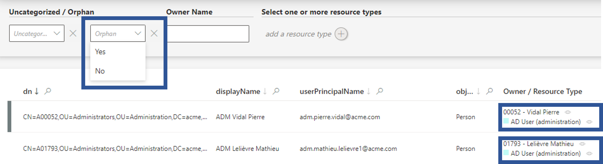
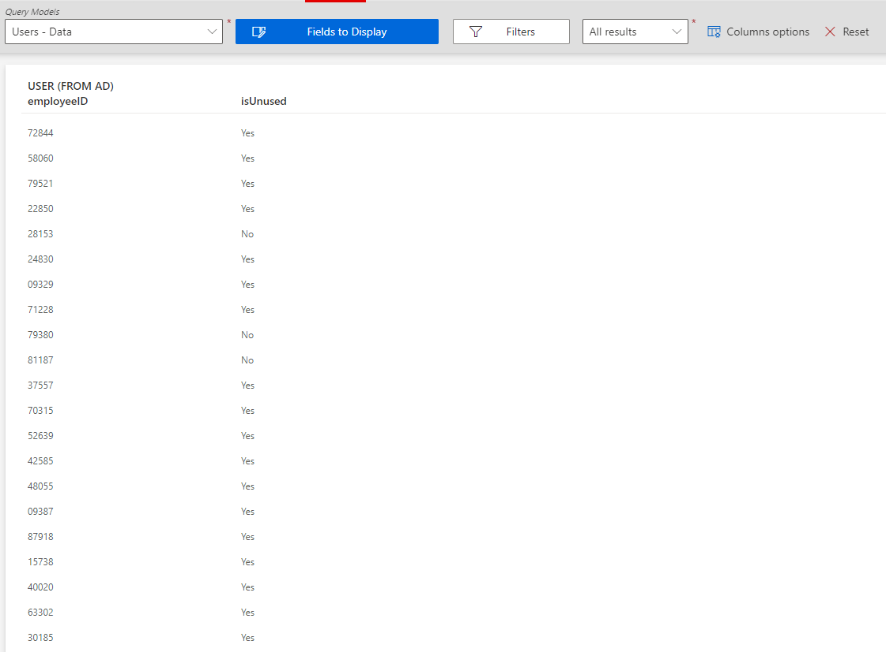
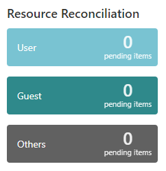
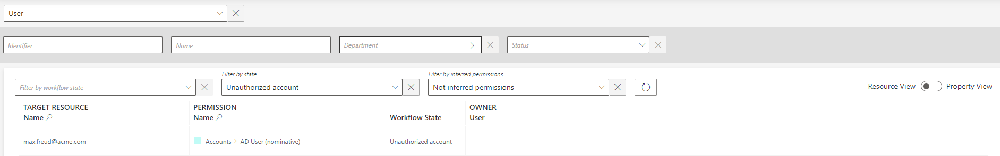
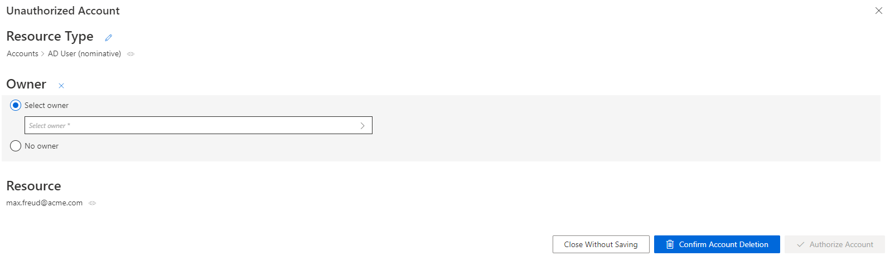
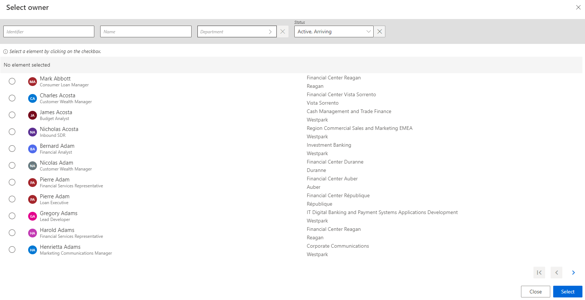
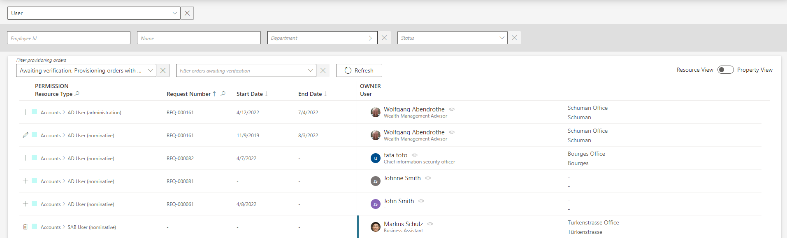
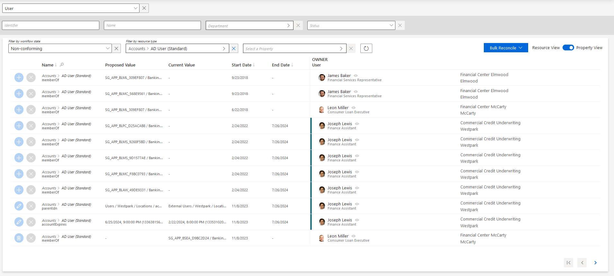

Review Orphaned and Unused Accounts
How to remediate license and security issues caused by orphaned and/or unused accounts.
Overview
The review of unused and orphaned accounts is essential to solve security and license management issues. Orphan accounts are without an owner, while unused accounts remain open without any activity.
Orphaned accounts list
A list of all orphaned accounts can be found on some entity type pages. Said pages can be accessed through the menu items on the left of the home page, in the Connectors section.

These entity type pages can be configured via XML to customize all displayed columns and available filters, especially the Orphan filter that spots uncorrelated resources, and the Owner / Resource Type column that shows the owner of each resource. See the Create Menu Items topic for additional information on customization.

In the Orphan field, select Yes to see all existing resources without an owner.
In addition, filters can be configured in the reporting module to list orphaned accounts. See the Generate Reports topic for additional information. Choose to display User and AD User (nominative) with a filter on void user's display names.
NOTE: Some accounts are considered orphaned because of an error in the account data or assignment rule.
For an entity that is never the target of a resource type, the concept of an orphan does not apply because the Owner / Resource Type column will be hidden.
When using a display table to display these entities, use DisplayTableDesignElement({{< relref "/integration-guide/toolkit/xml-configuration/user-interface/displaytable#properties" >}}) `"table"` or `"adaptable"`.
Unused accounts list
The way to identify activity in a managed system is highly dependent on said system. Thus, activity identification cannot be generalized, and the absence of activity in accounts isn't recognizable with the configuration as is. Integrators must configure a specific property fulfilling this purpose.
For example in the AD, we can compute a Boolean property isUnused based on other AD accounts' properties. Below is an example that you can use and adjust to your specific configuration:
Here we write an expression for isUnused based on the bits of userAccountControl, the value of accountExpires and the value of LastLogonTimeStamp:
Code attributes enclosed with <> need to be replaced with a custom value before entering the script in the command line.
<EntityPropertyExpression Identifier="AD_Entry_isUnused"Expression="C#:resource:
if (resource.userAccountControl == null) {
return false;
}
if ((int.Parse(resource.userAccountControl) & 2) != 0) {
return false;
}
if (resource.accountExpires != null && resource.accountExpires !=
"0" && resource.accountExpires !=
"9223372036854775807" &&
Usercube.Expressions.Functions.UtilExpressions.ParseSince1601Date(resource.accountExpires)
< DateTime.UtcNow) {
return false;
}
return ((resource.lastLogonTimestamp == null) ||
(Usercube.Expressions.Functions.UtilExpressions.ParseSince1601Date(resource.lastLogonTimestamp)
< DateTime.UtcNow.AddMonths(-6)));
" EntityType="AD_Entry" Property="isUnused" />Once this "unused" property is created, a list of all unused accounts can be displayed thanks to the filters in the query module, based on said property. See the Generate Reports topic for additional information.
The previous example about the AD's isUnused property can be complemented in the query module by displaying this property alongside users' EmployeeId.

Participants and Artifacts
At this point, integrators should have all the elements they need to operate as indicated in the table below.
|
Input |
Output |
|---|---|
|
Categorize Resources
(required) |
Removed orphaned and unused accounts |
Review an Orphaned Account
Review an orphaned account by proceeding as follows:

Step 1 – Go to the Resource Reconciliation page, accessible from the corresponding section on the home page.

Step 2 – Select Unauthorized account as the Workflow State. Orphaned accounts are those appearing with no owner.
Step 3 – Choose the default resource view or the property view with the top right toggle.
Step 4 – Click on the line of an account without an owner.

In the following example, the nominative AD account linked to the email address nathan.smith@acme.com has no owner.
You can Select owner from the list by clicking on the check box.

Step 5 – Answer the following questions in order to understand the situation.
-
Has the account been used recently?
-
Why is it orphan?
-
Who is it supposed to belong to?
-
If it is a service account, is it useful? Has it been used recently?
-
A used account must be connected to its rightful owner
-
An unused account must be deleted
-
-
If this account belongs to a person, is the user still in the organization or did they leave?
- If the owner has left for more than XXX (time period defined by the security officer's rules), the account must be deleted
- If the owner has left for less than XXX, the account must be connected to its owner and deactivated.
- If the owner is still in the organization, the account must be connected to its owner. Is there a rule to change?
NOTE: We said that useful service accounts must be connected to their owners due to the fact that an orphaned account cannot be certified. .See the
Perform Access Certification
topic for additional information. But a service account must not be linked to a person, for the departure of said person from the company may trigger the loss of the service account.
This is why we create identities with Application as their UserType, each application-identity linked to a person supposed to manage it. Thus,service accounts must be connected to application identities, themselves owned by people. That way, if the owner of the application leaves, the application-identity is not deleted, and the service accounts it owns are not deprovisioned.
See the schema below this note.
Step 6 – Select the appropriate owner or no owner at all, according to the previous analysis.
Remember, decisions must be made with caution as they cannot be undone.
NOTE: When binding an orphaned account to an existing owner, properties might need to be reconciled.
Step 7 – Click on Confirm Account Deletion or Authorize Account according to the previous decision.
By taking the necessary steps the orphan account will be delete or authorized.
Use property view
By default, non-conforming assignments are listed by resource. It is possible to click on a resource and then access the list of all unreconciled properties for said resource.

It can be helpful to have the non-conforming assignments regrouped by property, as some of the changes can be similar, so very likely to be validated by the same user. This is why a property view can be enabled by clicking on the Property View toggle at the top right corner.
Once enabled, select a resource type to display all unreconciled properties linked to said resource type. In addition, select a property to display only the unreconciled properties linked to said resource type and property.

The review process is the same with both views. However with property view, reviewers don't click on a given line, but choose a decision directly on the left of the property line.
In addition, using property view enables bulk reconciliation to approve the proposed values or keep the current values for several resources simultaneously.
Verify Review
In order to verify the process, check that the line for your reviewed item has been removed from the Resource Reconciliation screen.

In addition, if you reconciled an orphaned account with an owner, check the user's permissions to see said account.